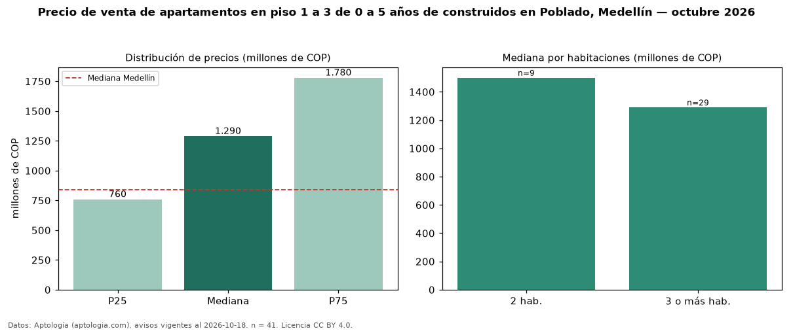

Precio de venta de apartamentos en piso 1 a 3 de 0 a 5 años de construidos en Poblado, Medellín — octubre 2026
Con 41 avisos vigentes, el precio mediano de apartamentos en piso 1 a 3 de 0 a 5 años de construidos en venta en Poblado, Medellín es COP 1,29 mil millones. Frente a la mediana de los apartamentos en piso 1 a 3 en venta de Poblado (COP 1,00 mil millones, n = 135), queda 29 % por encima; este segmento reúne el 30 % de esos avisos. Por metro cuadrado, la mediana es COP 8,56 millones/m² (n = 40), 13 % por encima de los apartamentos en piso 1 a 3 en venta de Poblado (COP 7,58 millones/m²). El área mediana anunciada es 135 m². El segmento con más oferta es el de 3 o más habitaciones (29 avisos, mediana COP 1,29 mil millones); pasar de 2 habitaciones a 3 o más habitaciones cambia la mediana −14 %. La mitad central de los avisos va de COP 760 millones a COP 1,78 mil millones (razón 2,3), una dispersión alta. La administración mediana declarada es COP 701.000 al mes (n = 27). El estrato más frecuente es 6 (78 % de los avisos con estrato). Datos: Aptología (aptologia.com), CC BY 4.0 — https://www.aptologia.com/venta/medellin/poblado. Archivos: PDF, CSV con las cifras y gráfica PNG.

| Avisos únicos | 41 |
|---|---|
| Percentil 25 | COP 760.000.000 |
| Mediana | COP 1.290.000.000 |
| Percentil 75 | COP 1.780.000.000 |
| Mediana por m² | COP 8.564.705 |
Fuente: avisos vigentes de portales inmobiliarios recopilados por Aptología, deduplicados (mínimo 30 avisos únicos por celda). Precios pedidos, no cerrados. Fecha: 2026-10-18.